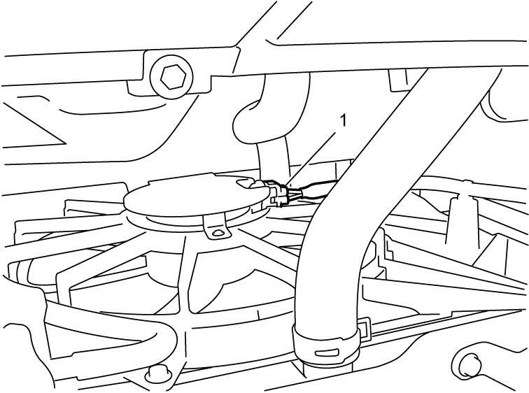
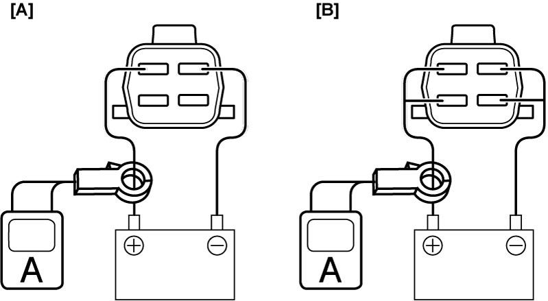

1F
| Radiator Cooling Fan Assembly On-Vehicle Inspection |
Radiator Cooling Fan Operation
1)Connect SUZUKI scan tool to DLC (1) with ignition “OFF”.


 "Expand image")
2)Set ignition “ON” and clear DTC. 
3)Select “Radiator Fan” function in “Active Test”.
4)Check radiator cooling fan operation at low and high modes.
If any abnormality is found, check cooling fan control system.
If any abnormality is found, check cooling fan control system.
Radiator cooling fan operation
| Radiator cooling fan motor | |
|---|---|
| OFF | OFF |
| Low mode | Low speed |
| High mode | High speed |
Radiator Cooling Fan Motor
1)Disconnect radiator cooling fan motor connector (1).

 "Expand image")
2)Using service wire, connect radiator cooling fan motor connector and battery as shown in figure.

 "Expand image")
| [A]: | Low speed | [B]: | High speed |
3)Check that radiator cooling fan motors rotate smoothly and properly.
If any abnormality is found, replace radiator cooling fan motor.
If any abnormality is found, replace radiator cooling fan motor.
Reference: Fan motor specified current at 12 V
Low speed: 6.4 – 10.4 A
High speed: 9.9 – 14.9 A